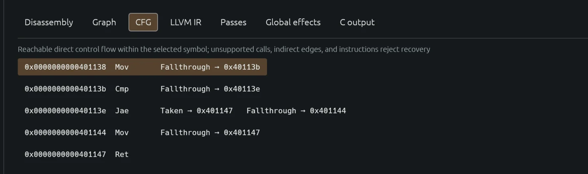
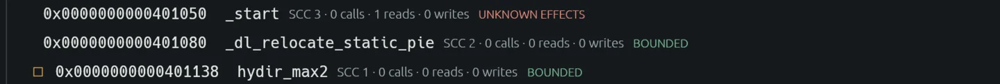
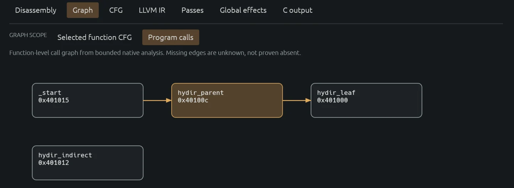
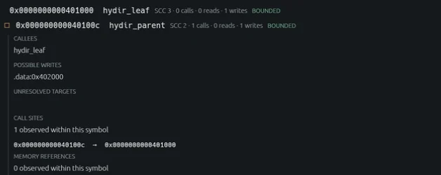

HydIR
Read the new technical articles →
HydIR reads x86-64 ELF binaries, recovers a limited class of functions, and emits LLVM IR and C. This article follows one function, hydir_max2, from its bytes to a differential test. It also shows where the tool stops. Importing a binary, recovering its control flow, lifting a function, and rebuilding an executable are separate operations with separate contracts.
Input and extent
The importer accepts little-endian x86-64 ELF and caps input at 64 MiB. It records sections, mapped segments, symbols, imports, and relocations with their provenance. This is an inventory, not proof that every instruction has a modeled meaning. Ordinary inspection reports call and reference recovery as not_attempted; an empty list would be an unjustified claim.
The function-level lift starts from either a nonzero ELF function symbol or an analyst-supplied virtual address and byte count. For the fixture below, the symbol table gives entry 0x401138 and extent 16 bytes. The command-line flag --assume-u64x2 supplies the prototype u64(u64, u64) under SysV AMD64. HydIR does not infer that prototype from the bytes. For a stripped copy of the fixture, the demo repeats recovery with cfg-at and lift-at using the explicit entry and extent.
The checked-in assembly fixture is short enough to read in full:
.globl hydir_max2
.type hydir_max2, @function
hydir_max2:
movq %rdi, %rax
cmpq %rsi, %rdi
jae .Ldone
movq %rsi, %rax
.Ldone:
retThis is unsigned maximum. The first move makes the first argument the provisional return value. cmpq %rsi, %rdi sets flags for rdi - rsi. jae keeps that value when the first argument is above or equal to the second; otherwise the following move loads the second argument into RAX. The comparison is unsigned, so replacing jae with a signed condition would change the function for values with the top bit set.

Recovering the CFG
HydIR uses iced-x86 to decode reachable instructions. Recovery begins at the declared entry and follows a worklist. A return has no successor; an unconditional direct jump has one; a conditional branch has its taken target and fallthrough address. Every successor must remain within the selected extent. An ownership map prevents two decoded instructions from claiming the same byte. Invalid encodings, overlapping instructions, indirect branches, unsupported instructions, and edges that escape the extent fail recovery. The function-level path also caps the selected extent at 4,096 bytes.
For hydir_max2, the result contains five instruction blocks and five edges. The jae at 0x40113e has a taken edge to the return at 0x401147 and a fallthrough edge to the second move at 0x401144. Both paths meet at the return. The CFG artifact retains addresses, original byte strings, edge kinds, a binary SHA-256, the symbol extent, and a recovery-scope statement. Its block count is not a claim that arbitrary x86-64 has been analyzed.


Lowering machine state
The lift models five full-width integer registers—RAX, RDI, RSI, RDX, and RCX—and four flags: ZF, SF, OF, and CF. Inputs enter RDI and RSI. Before emitting IR, a dataflow pass computes which fields are definitely initialized at each instruction. At a join, it intersects the outgoing sets of all predecessors. A read that is undefined on even one reachable path is rejected; every return path must define RAX.
Each recovered instruction becomes an LLVM basic block. Incoming register and flag values are represented by phi nodes. The IR is intentionally close to machine state rather than reconstructed source structure. For this fixture, unsigned carry is the decisive flag. The generated comparison sets CF when RDI is below RSI; the jae branch negates CF. At the return, a phi selects the RAX value from the direct branch or the fallthrough move.
Selected lines from the generated max2-lifted.ll:
%cf_out_40113b = icmp ult i64 %rdi_in_40113b, %rsi_in_40113b
%t_40113e_0 = xor i1 %cf_in_40113e, true
br i1 %t_40113e_0, label %b401147, label %b401144
%rax_in_401147 = phi i64 [%rax_in_40113e, %b40113e], [%rax_out_401144, %b401144]
ret i64 %rax_in_401147The excerpt omits the other register and flag transfers; the generated file keeps them explicit. cmp computes ZF, SF, OF, and CF even though this branch only needs CF. Wrapping arithmetic is emitted without nsw or nuw, because those promises would assert more than the machine operation supplies.
The C output follows the same direct CFG. It uses labels, gotos, and parallel copies for SSA edges; it does not claim to recover the programmer's original control structures. For the comparison above, its carry expression is an unsigned comparison of the two input values. The C generator can fail independently of CFG and LLVM lifting.
What the tests establish
demo-local.sh compiles the assembly fixtures, imports an ELF, lifts functions, emits C, and checks the output against native execution. It invokes LLVM's IR verifier when opt is available. It also strips a copy of hydir_max2 and reruns the address-and-size path. demo-corpus.sh covers 16 additional scalar functions and requires opt. Together with the four distinct functions in the local demo, the documented scalar set has 20 functions.
bash scripts/demo-local.sh
bash scripts/demo-corpus.shFor each output path, validation runs 1,008 controlled input pairs. It compares the lifted runner and the compiled C runner with the original fixture, including stdout, stderr, and exit status. One recorded hydir_max2 report has the following fields:
{
"cases_attempted": 1008,
"cases_matched": 1008,
"cases_mismatched": 0,
"result": "pass",
"sandbox": "none; trusted fixtures only"
}The report is finite test evidence, not a proof over all 64-bit input pairs. opt -passes=verify checks that the generated LLVM IR is well formed; it does not prove equivalence to the binary. Validation executes the original binary, so the CLI requires --trusted-fixture. There is no hostile-input sandbox in this path. The demos require Linux x86-64; the repository provides a Docker-based runner for macOS.
Refusal and separate contracts
Global-effect analysis is a separate bounded pass over ELF function symbols. On the hydir_max2 demo ELF, it marks the selected function BOUNDED but marks _start UNKNOWN EFFECTS. The function lift does not imply that the whole executable has known effects.

A separate fixture shows the program-call view. It resolves direct edges from _start to hydir_parent and from hydir_parent to hydir_leaf. hydir_indirect has no resolved edge in this view; missing edges remain unknown, not proven absent.

In that fixture, hydir_leaf writes hydir_counter in .data. The effect summary for its direct caller, hydir_parent, includes the possible write at 0x402000. This is a may-write result within the bounded analysis scope.

The workbench keeps stage failures distinct. In the separate global-effects fixture shown below, C output reports an unsupported Call at 0x401012. The message says that this C-generation failure does not discard a valid CFG or LLVM lift. It does not imply that the call has been modeled by the function-level scalar lift.

The scalar lift rejects memory operations, calls, indirect control flow, partial-register operations, uninitialized reads, and unknown instruction semantics. An import can still succeed: parsing an ELF and translating its behavior are different tasks. The desktop app opens a local ELF without uploading it; transfer to a remote project is a separate, labelled action. Analyst names, comments, and assumptions are stored as local project data and do not become recovered machine facts.
Whole-executable rebuilding uses a different path. demo-recompile.sh exercises three trusted, static freestanding fixtures. The rebuild contract requires bounded mapped data, complete text coverage, direct calls and branches, and statically checked read/write/exit syscall sites and buffers. The output goes to a new directory. The script compares stdout, stderr, and exit status for selected inputs, and checks that unsupported instructions, uninitialized reads, forbidden writes, unmapped buffers, and unsupported syscalls fail. Passing that gate does not expand the function lift into a general decompiler or establish equivalence for arbitrary executables.